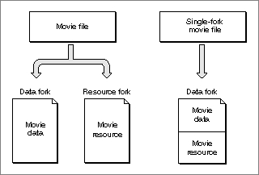
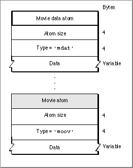

Storing Movies in Files
In the Macintosh file system, the Movie Toolbox typically uses both the resource
fork and the data fork to store a QuickTime movie. The resource fork contains the movie resource. The data fork contains the actual movie data (or references to external data).To facilitate data exchange between Macintosh computers and other computers, the Movie Toolbox can also understand movie files that store all the information for a movie in the data fork. These movie files are called single-fork movie files. Single-fork movie files are a possible way to export QuickTime movies to other systems, such as a computer using QuickTime for Windows.
Your application can create single-fork movie files from normal movie files by calling the Movie Toolbox's
FlattenMovieDatafunction (see the chapter "Movie Toolbox" for more information about this function). Your application can read single-fork movie files using the standard Movie Toolbox functions--you do not need to perform any special processing.Figure 4-1 shows the difference between single-fork and normal movie files. A standard Macintosh movie file contains information in both the data and the resource forks. A single-fork movie file contains a data fork.
Figure 4-1 Movie files and single-fork movie files

Single-fork movie files store all the information for a movie in the data fork. The data fork contains two atoms: a movie data atom (
'mdat') and a movie resource atom. The movie's media data is stored in the movie data atom. Other atoms may follow the movie data atom. The movie resource atom follows the movie data atom and holds the description of the movie. There is no resource fork for this kind of movie file. Figure 4-2 shows the layout of a single-fork movie file. The movie data atom contains no other atoms, whereas the movie atom may contain other atoms.Figure 4-2 The structure of a single-fork movie file
